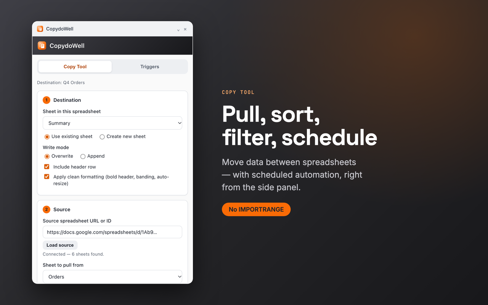

On this page
What it does
CopydoWell moves data between spreadsheets without formulas, IMPORTRANGE, or manual copy-paste. It's available in two forms that share the same core idea — pull, sort, filter, and sync — but work a little differently:
Google Sheets add-on
Installed from the Google Workspace Marketplace, opened from the Sheets Extensions menu.
Chrome extension
Installed from the Chrome Web Store, opened as a side panel next to any Google Sheet.
See it in action

Which one should I use?
Both do the same core job. The differences worth knowing:
| Sheets add-on | Chrome extension | |
|---|---|---|
| Price | Free | Free |
| Where it opens | Extensions menu, inside Sheets | Side panel, next to any Sheet |
| Scheduled runs | Yes — one saved job per spreadsheet | Yes — multiple named triggers |
| Runs when the source sheet is edited | Yes | No |
| Runs when the linked form is submitted | Yes | No |
| Reorder the destination's columns | No | Yes |
| Runs with the browser closed | Yes | No |
| Run history in the interface | No | Yes |
Google Sheets add-on
Install
Installed from the Google Workspace Marketplace directly into Google Sheets. Once installed, open its tools from the Extensions menu in any Google Sheet: Extensions → CopydoWell → Copy Tool.
Copy Tool
The sidebar walks through four steps, plus optional automation.
Destination
A sheet in the spreadsheet you have open. Overwrite or append, with optional header row and clean formatting.
Source
Paste the URL or ID of the spreadsheet to pull from, click Load source, then pick a sheet inside it.
Sort
Optionally choose a source column to sort by, ascending or descending.
Filter
Add conditions — column, operator, value. All must match for a row to be included.
What each step covers
Destination — pick a sheet in the spreadsheet you currently have open; this is where the data will land. Use an existing sheet or create a new one. Choose Overwrite to replace its contents each time, or Append to add rows below what's already there. "Include header row" controls whether column headers are copied along with the data, and "Apply clean formatting" bolds the header, freezes it, auto-resizes columns, and applies row banding.
Filter operators available: equals, not equals, contains, does not contain, greater than, less than, greater or equal, less or equal, is empty, is not empty.
Click Run now to perform the copy immediately.
Automation
Below Run now, three toggles let a saved job run on its own:
- Run automatically when the source sheet is edited — re-runs the job whenever the source sheet changes.
- Run automatically when the linked form is submitted — re-runs the job whenever the source spreadsheet's linked Google Form receives a new response.
- Run on a schedule — every N minutes, every N hours, or daily at a chosen hour.
Turning on any toggle saves your current Destination/Source/Sort/Filter settings as "the job" and creates the matching trigger. Turn a toggle off at any time to remove that automation.
Chrome extension
Install
Installed from the Chrome Web Store. Once installed, open the side panel on any Google Sheet (click the CopydoWell toolbar icon). The panel has two tabs: Copy Tool and Triggers.
Copy Tool
Works like the add-on's Copy Tool, with one addition: after picking which columns to copy, you can use the ↑ / ↓ buttons next to each selected column to set the destination's column order — it doesn't have to match the source sheet's order.
Triggers
The extension supports multiple, independent scheduled jobs at once, each with its own source, destination, and schedule. The Triggers tab lists every one you've saved:
Daily roll-up
SuccessEvery day at 09:00 · Orders → Summary
Hourly sync
SkippedEvery 1 hour · Leads → CRM import
- From the Copy Tool tab's Automation section, name a trigger, set a schedule (every N minutes/hours, or daily at an hour), and click Add trigger.
- Only run if the source changed — an optional switch so a scheduled job skips itself when the source sheet hasn't changed since its last run, avoiding redundant copies.
- Each trigger card shows its name, schedule, source, destination, next run time, and a run history: the last run's status (success, skipped, or failed), when it ran, and how many rows it copied.
- Each card has Edit (reloads its exact settings into the Copy Tool tab so you can adjust and save changes) and Delete (removes it and cancels its schedule) buttons.
Unlike the add-on, the extension can't react to edits or form submissions directly (a browser extension has no way to be notified the instant a Sheet changes) — only scheduled runs are supported. A trigger only runs while Chrome is open and you remain signed in; if a run fails, you'll get a Chrome notification.
Pricing
The Chrome extension is free — every feature, including scheduled automation, with no purchase required. If it saves you time, donations are welcome and help keep the project running: support CopydoWell. See the Terms of Service for details.
Support
Questions or issues, for either product: support@metalix.in